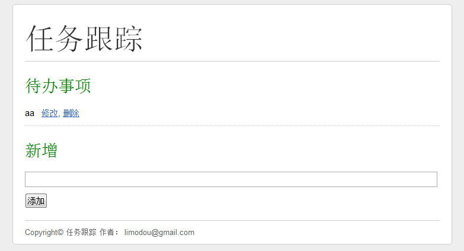

Baidu Application Engine部署及开发指南¶
Baidu Application Engine(简称bae)是百度发布的类似于GAE的云环境，目前提供了对 python的支持。不过现在还要测试过程中，所以以下的部署说明有可能会发生变化。bae 的环境有些和sae(Sina Application Engine)类似，不过还是有一些区别，后面会简单 介绍。本文档假设你已经有了bae的帐号。
Python项目创建¶
为了使用Uliweb你的第一步是要先创建一个Python的项目，目前需要有邀请码并由管理人 员开通。不要问我要邀请码，因为我只有一个，为了做测试已经用掉了。
- 进入 http://developer.baidu.com/service
- 点击百度应用引擎，点击 “立刻开始使用”

- 然后创建应用
- 创建好后，大概是这样:

- 点击版本管理后，新建一个版本。这里bae的版本和sae差不多，都是用数字作为版本 目录。它是从0开始。创建好后，在下面可以看到svn的地址。这样可以用Svn工具checkout 代码了。用户名口令就是百度的用户名口令。

注解
要注意的是，我在使用chrome 21.x dev版本时报了一些js的错，所以后来切換到了 ie上来执行。说是我的chrome版本太高了，不知道算不算bug。
缺省情况下，刚checkout出来的代码只有3个文件:
app.conf favicon.ico index.py
其中index.py是启动文件，这个后面我们要修改它，app.conf就象是GAE的app.yaml的 内容，可以设置 url 的配置信息等。在bae的文档上有更详细的说明。
其实到这里，应用应该已经可以跑起来了。bae已经生成了缺省的环境。点某个版本上的 预览 就可以看到当前版本号执行的效果。
下面就开始 Uliweb 的部署过程。
uliweb的部署¶
uliweb安装¶
这里我不会演示一个 Hello, Uliweb 如何做，太简单了。我会使用 uliwebdoc 下的 SimpleTodo 的例子来做。它的代码你可以从 uliweb-doc 项目 中的 projects中找到，不过这个版本还不能直接运行到 bae 上去，所以需要进行必要的修改。
目前uliweb最新版本是0.1，在发布时还没有对bae作特殊的支持处理。所以你要从svn或github 上下载最新的 uliweb 的源码。点击上面的zip图标 就可以下载了。
然后为了方便在uliweb的解压目录下执行:
python setup.py develop
来安装uliweb。这步是为了在你的机器上创建uliweb环境。
执行bae的支持¶
在git中的最新uliweb版本已经包含了对bae的支持。所以先进入你的项目的某个版本，比如 我的版本目录是: bae/0
然后进入命令行，执行:
uliweb support bae
它会在当前目录下创建 lib 目录。同时会使用uliweb提供的 index.py 覆盖原来的 index.py 文件。同时会覆盖app.conf。让我们分别看一下:
#index.py
import sys, os
path = os.path.dirname(os.path.abspath(__file__))
project_path = os.path.join(path, 'project')
sys.path.insert(0, project_path)
sys.path.insert(0, os.path.join(path, 'lib'))
from uliweb.manage import make_application
application = make_application(project_dir=project_path)
这是启动文件，没什么特殊的。不过上面要注意， index.py 默认是使用 project 作为项 目目录，并且是位于版本目录下面。所以如果你的项目名和结构不同，要对上面 project_path 作必要的修改。
- ::
#app.conf
- handlers:
- url : /?(.*) script : index.py
- expire : .jpg modify 10 years
- expire : .swf modify 10 years
- expire : .png modify 10 years
- expire : .gif modify 10 years
- expire : .JPG modify 10 years
- expire : .ico modify 10 years
这是 app.conf 内容。原来 url 那行就是 ‘/’ ，这里会替換为 /?(.*) 。上面的 格式是yaml的，所以和GAE很象。这个文件也可以直接在界面上进行修改。同时所有的文件 都可以在界面上直接修改。修改后会自动保存到svn中，你可以 update 与本地文件进行合并 处理。这点还是很方便的。
经过上面的处理，我们在 0 目录下已经有了:
lib/
app.conf
index.py
favicon.ico
然后我们要把 uliweb 的压缩包放到 lib 目录下。因为 lib 会自动加入到 sys.path 中。所以我们要保留 uliweb 子目录，以便可以直接导入 uliweb 。这里这样的处理是因为 bae中还没有预装 uliweb 所以我们要自已上传。
然后我们创建 project 目录，把 uliweb-doc/projects/simple_todo 的代码拷贝过来。这样 我们的目录结构基本上就是:

Simple To Do 部署¶
simple to do 是一个简单的todo展示。功能很简单，但是它使用到了数据库。所以使用 这个例子是为了验证数据库的安装是否正确。但是没有使用到session，所以无法测试session 是否可以正常使用。

simple_todo settings.ini修改¶
将simple to do的代码拷过来后，首先要修改 project/apps/settings.ini
[GLOBAL]
DEBUG = False
INSTALLED_APPS = [
'uliweb.contrib.staticfiles',
'uliweb.contrib.orm',
'uliweb.contrib.bae',
'todo',
]
[SITE]
SITE_NAME = '任务跟踪'
EMAIL = 'limodou@gmail.com'
[ORM]
DATABASE = '数据库名'
这里在 uliweb.contrib.orm 后面添加了一行 'uliweb.contrib.bae' ，目的是 可以从 bae.core.const 中获得mysql相关的信息。
我是如何得知 bae.core.const 的呢？是在看到关于常量的描述时提到的，于是我通过:
import bae.core.const
raise Exception(dir(bae.core.ocnst))
来显示，看到有关于 MySQL 的配置项，包括:
MYSQL_HOST
MYSQL_PORT
MYSQL_USER
MYSQL_PASS
MYSQL_DB #不可用
不过发现 MYSQL_DB 得到的值是 None ，所以不知道这是不是一个 BUG 。所以我只能在 settings.ini 中増加了一个 DATABASE 的配置项，所以这就是上面 settings.ini 中 DATABASE 的来源。
这里， uliweb.contrib.bae 会自动依赖 uliweb.contrib.orm ，就是说你不配置 uliweb.contrib.orm 也是可以的，它会自动配置上。 uliweb.contrib.bae 的作用是在执行 uliweb.contrib.orm 之前得到正常的 CONNECTION 串，将放到 settings.ORM.CONNECTION 中，这样 uliweb.contrib.orm 就可以正确处理了。
todo表创建¶
因为 bae 无法使用ssh来 telnet ，所以 uliweb 提供的命令行就无用了。原本启动前的 第一步就是执行 syncdb 来创建相关的表。但是执行不了，所以只能使用 phpadmin 来处理 了。所以首先在命令行下执行:
uliweb sql
它会打印出建表的SQL语句，拷贝下来到phpadmin中执行它吧。不过 uliweb sql 无法打印 含有创建 Index 的语句。所以如果存在索引创建，要自已手工去使用 phpadmin 来建。
启动¶
将修改后的代码每次一提交，bae 会自动启动应用。使用预览的话可以看到每个版本的情况。 如果执行正确，在应用面板中，对于相要生效的版本点击前面的 radio button。bae会提 示你生效，一旦生效。你就可以通过域名来访问了。
uliweb的演示版本为: http://0.uliweb.duapp.com/ 有兴趣可以试试。下面为页面示例:
BAE的受限环境说明¶
具体的受限说明详见下面的开发文档。特别要说明的是上面的 settings.ini 中的 DEBUG ``为 ``False 。 为什么，因为bae把 wsgi['stderr'] 给禁掉了。而 uliweb 的 debug 功能是依赖于 werkzeug 的 DebugApplication 类，它要使用 wsgi['stderr'] 的。因为写不进去，所以就会报错。 不知道这块为什么要禁掉，这样调试就会很麻烦。
在bae的预装软件列表中，已经有了 uliweb 要使用的数据库相关的包，如：sqlalchemy， mysql-python。 其中 Werkzeug 不是必须的，虽然它已经装了，不过 uliweb 自带一个并且是有所修改的版本。
BAE的开发文档¶
感受¶
BAE 和 SAE 为国内提供了云部署环境，支持 Python 很给力，不过限制比起我用过的 dotCloud等国外的环境还是有些多了点，比如 dotCloud 提供了命令行工具，可以 ssh 登录服务器，这样安装调试都很方便。并且没有太多环境的限制。希望以后在这些方便 可以加强。